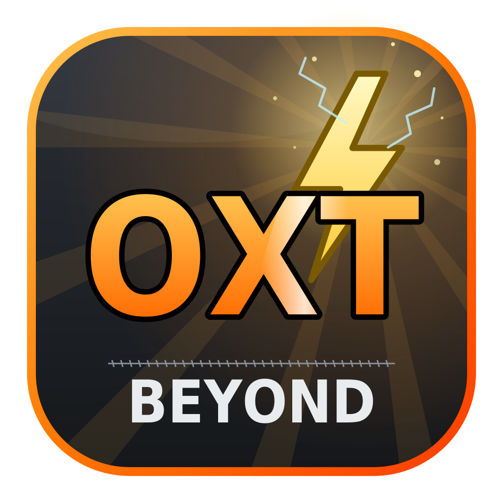

There’s another road for your stacks.
LiveCode Community’s GPL code lives on as OXT-Beyond: free, open source and still moving.
LiveCode Community’s GPL code lives on as OXT-Beyond: free, open source and still moving.

Coming from LiveCode
What opens, what differs, where your libraries went, and where every feature stands.
In-house tools and the GPL
A tool that stays inside your organisation owes nothing: no fee, no royalty, and no source to publish.
Stack checker
Drop a stack on the page, and see what will work, what differs, and what to do next.